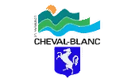
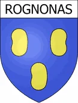
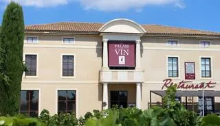

350 m² d'atelier
Atelier hangar équipé, bureau, showroom, et un parc extérieur de 1000 m² pour le stockage et la préparation des chantiers.
Références & savoir-faire
Au-delà des projets de particuliers, La Métallerie Du Sud intervient depuis plusieurs années sur des chantiers de grande envergure : marchés publics pour des communes et établissements publics, et programmes de promoteurs privés en région PACA. Voici un aperçu de nos références.
Nos moyens
Atelier, flotte de véhicules et équipe qualifiée : nous avons les moyens humains et matériels pour tenir les délais sur des chantiers exigeants.
Atelier hangar équipé, bureau, showroom, et un parc extérieur de 1000 m² pour le stockage et la préparation des chantiers.
Fourgons équipés pour la pose, plateaux avec grue, chariot élévateur et nacelle automotrice 12 mètres pour les interventions en hauteur.
Une équipe de fabricants et poseurs confirmés, un bureau d'étude structure partenaire, et un réseau de sous-traitants qualifiés pour absorber les pics de charge.
Références
Lots serrurerie-métallerie réalisés pour des communes et établissements publics (montants indiqués HT, données de la commande publique).

Lot serrurerie, grille de ventilation de la cuisine centrale.
Escalier, garde-corps, main courante, clôture et portillon.
Abris vélo, garde-corps, portail aux normes CE, auvent, grilles de défense.
Lot serrurerie / métallerie.

Lot serrurerie / métallerie.
Lot serrurerie / métallerie.

Escalier de secours, garde-corps.
Équipement en serrurerie de la piscine municipale.
Un projet de grande envergure ?
Marché public, programme immobilier, bâtiment industriel : contactez-nous pour étudier votre projet, quelle que soit son ampleur.
Nous contacter